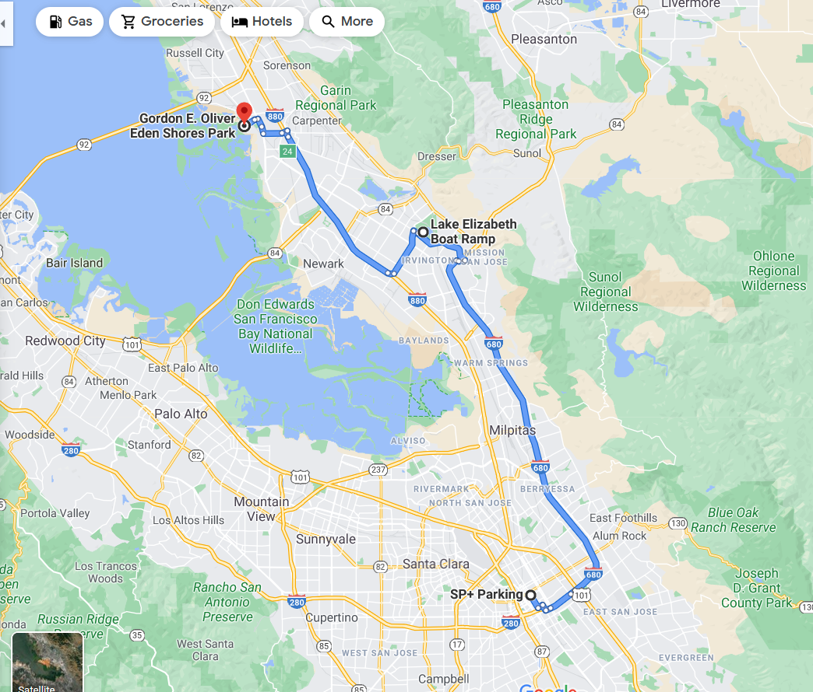
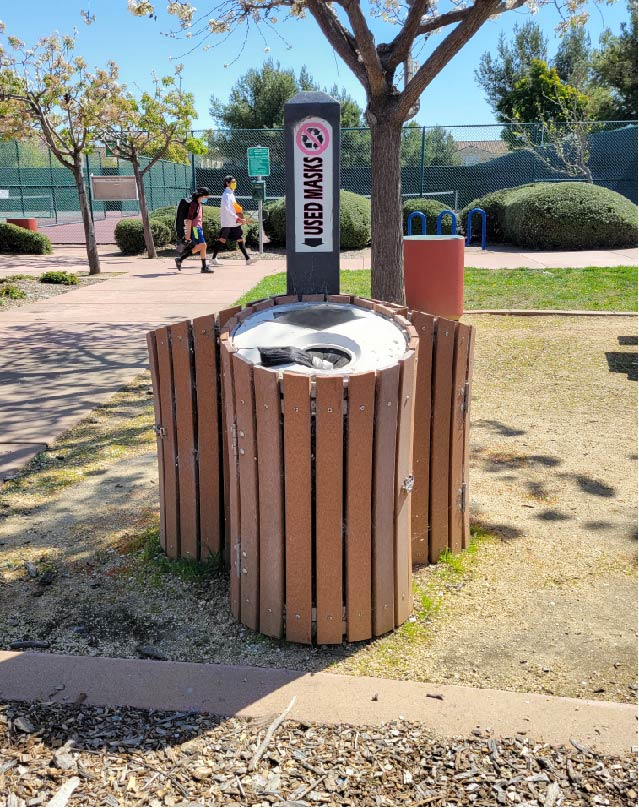
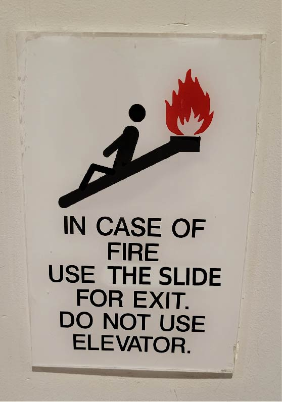
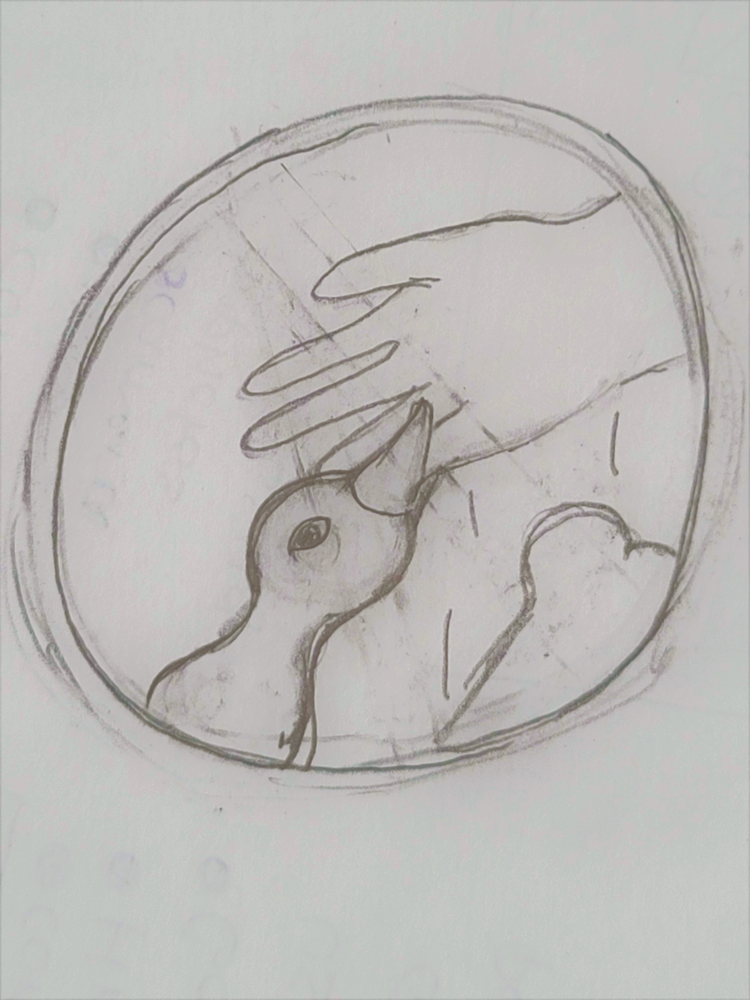
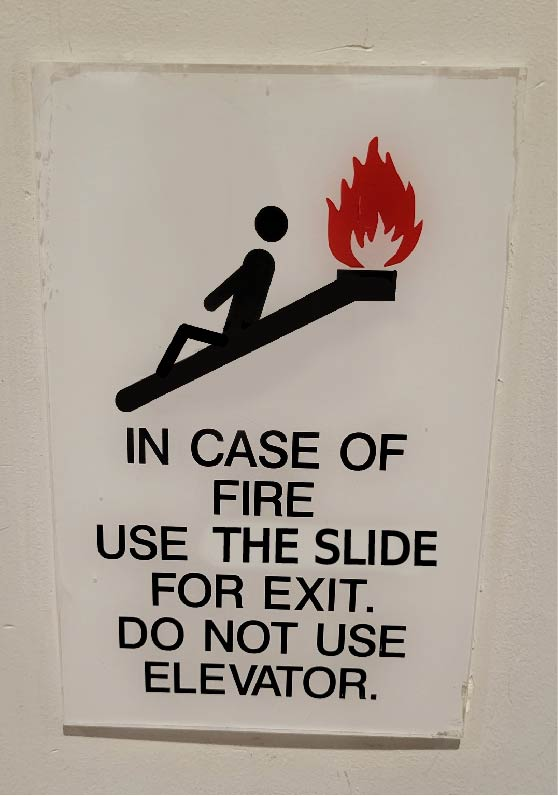
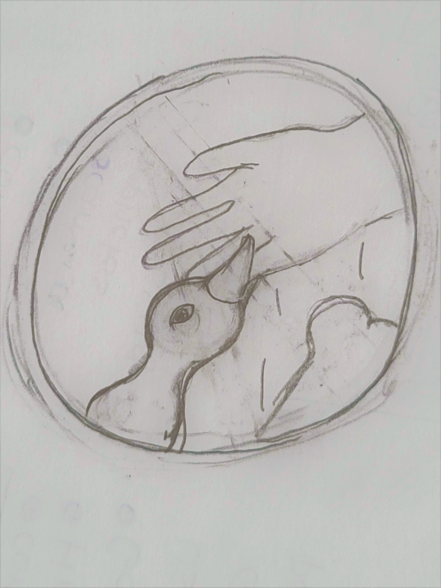
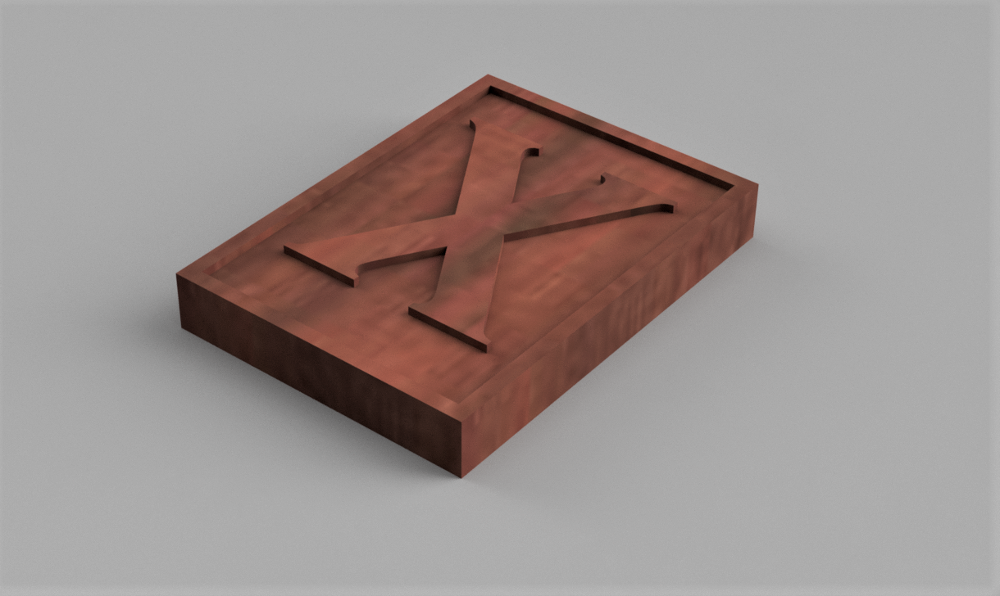
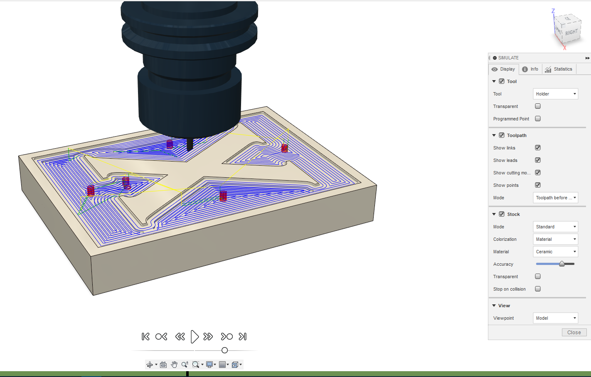
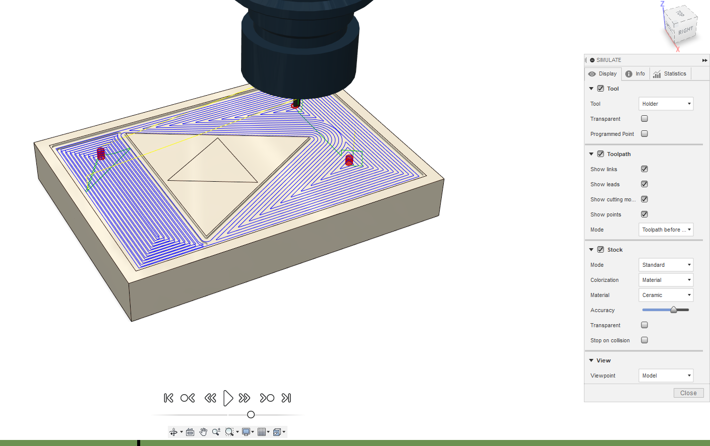

Phase 1:Sign Series
I frequently go out for walks to local parks and I ended up finding a lot of diffrent signs there.
The first place I went to this past week was a small park in Union City called Gordon E. Oliver Eden Shores Park. I took a picture of the sign that was in the playground that had warnings and guildlines in how to keep a safe enviornment in the playground area. This is something I never saw as a kid in a playground, but now signs like these are the norm and are everywhere.
.jpg)
.jpg)
I also took a picture of a sign posted on a fence warning people not to trepass onto the marsh on the other side of the fence across the playground and a trash bin.
.jpg)
.jpg)
The next place I visited was Lake Elizabeth in Fremont.I took picutres of diffrent signs there.My favorite sign illustrated to not feed the ducks, however people were still feeding the ducks...
.jpg)
.jpg)
.jpg)
I also took pictures of some signs inside a park garage in San Jose.
.jpg)
.jpg)
And here are my mock up desgins that were inspired by the signs I found.
 



Phase 2:Present CAD (Modeling objects)
For my first stamp design, I used the letter “X” because can be used to represent the unknown or to mark where something is located. Because of its versatile use, I thought it would be good to use it in a stamp design “X”. The second stamp design was inspired by the video game series, Legend of Zelda, the symbol is very simple but very iconic so I thought it would be interesting to see it in a stamp.

Phase 3:CAM (Toolpath Simulations)
Here is a link to the "X" stamp.
Here is a link to the "Triforce" stamp.
 